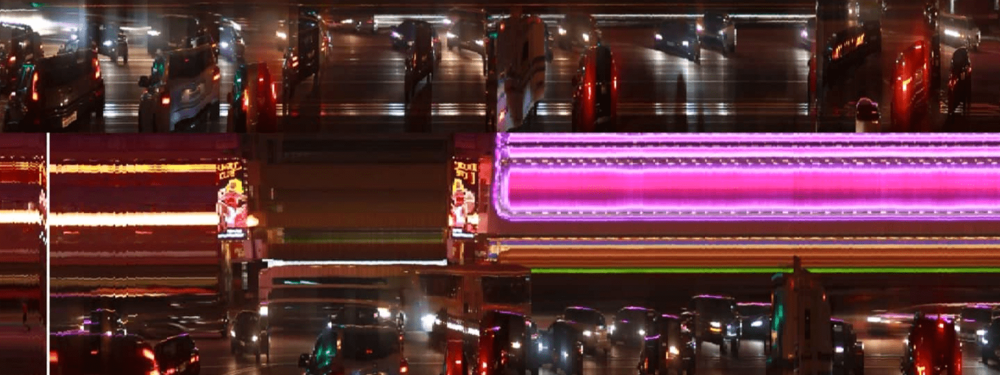

Static Representions of Time-based Media
Some media like text and images provide the entirety of their state in their static form. The piece of text or a picture we put on our wall is glanceable. This does not mean that we can experience the media fully with a glance - we must actually read the text or look at the picture. However, with a glance we can observe the full state of the medium.
An example of a media where this is not the case is video - as a time-based medium one can only experience the full state by directing our attention continously to the media. For a long time I have been interested in trying to craft a static representation of video. A representation which captures the dimension of time in a tangible way.
One way of statically representing a video is by creating a slitscan of it. In a slitscan every column of pixels is taken from a different frame of the source video. The resulting image is a collage of pixels taken from varying timestamps and varying visual coordinates. However, this representation of the time-based medium is rather coarse:
